Join the Vermont GIS and Data Science community at Main Street Landing on Burlington's waterfront and learn about the latest technology, see examples of outstanding projects, and discuss big ideas for the future across the two days. GeoDatSci is the evolution of the annual ‘Geospatial Forum’ that Vermont’s GIS community has held for over decade. We are excited that this year’s event is expanding the community and topics to include the emerging world of data science.
New possibilities and emerging trends.
New skills from experts offering practical advice to help you in your day to day work.
With new and old friends in Vermont's GIS and Data Science Communities.

Marguerite Dibble is the CEO of GameTheory and a consultant on game design, computer science education, and strategic development. She studied game development at Champlain College and founded her company before graduating in 2012. She was appointed to the Board of Trustees at Champlain College and currently serves on the Board of Directors for Vermont Public Television. She has been a keynote speaker at many events, including a TEDX talk, discussing the ways in which we can use game design for good, and promote diversity in technology spaces.
Attend both days or come for just one.
GeoDatSci was originally called the Vermont Geospatial Forum and has been run for many years by the Vermont Center for Geographic Information (VCGI). The change of the event name and the inclusion of data science was introduced in 2018 with the goal of bridging the two fields.
Location: Generator Makerspace, 40 Sears Ln., Burlington, VT 05401
Cost: Free and open to the public
This event will be composed of four half-hour talks exploring non-traditional applications of GIS and data in a range of fields. It is open to the general public and is held at Generator, a makerspace, learning lab, and incubator at the intersection of art, science, and technology.
Parking: Park on Sears Lane or behind the Champlain College Miller Center on Lakeside Avenue.
Location: Main Street Landing Performing Arts Center, 60 Lake St., Burlington, VT 05401
Cost: $65 Early bird (before April 15), $75 Regular
Topics will cover big ideas, interesting projects and technical instruction in the fields of GIS and Data Science. Most talks will be 20 minutes with a 10 minute Q&A and transition. Sponsor tables will be set up in the Filmhouse Lobby and the Atrium for visiting during breaks and between talks.
Food: Breakfast snacks and a brown bag lunch will be provided; if there are any dietary constraints, please let us know in the comments of the registration form.
Parking: There is no free parking for the venue; please review paid options for Burlington City Parking below.
Filmhouse - Jarlath O'Neil-Dunne: Mapping Vermont From Above
The Gallery - Ivan Brown: Technical Communication: What It Is. What It Isn't. Why It's Important.
Great Room - Johnathan Croft: Assembling MIRE Data: A Look Into the Development of GIS-based Intersection Data
Filmhouse - Greg Warrington: Gerrymandering: Math, Maps, and Mayhem
The Gallery - Tom Schwartzman: R and the ArcGIS Bridge
Great Room - Erik Engstrom: Save our Ash
Filmhouse - John Stanton-Geddes: Storytelling in Data Science
The Gallery - Dan Martin: New Datums: Replacing NAD 83 and NAVD 88
Great Room - Meg Petroski & Betsy Thompson: Essential Steps to Clean Up Your Data in Record Time
Filmhouse - Bill Morris: Google and the State of Vertically-Integrated Geodata Systems (panel to follow)
Filmhouse - Greg Fanslow: Zen and the Art of a Sports Ranking System: Data driven insights for a new Olympic sport
The Gallery - Hugo Martínez Cazón: Citizen Archaeology and Geology: The Burlington Ravine
Great Room - David Breeding: Is Spatial Still Special?: Perspectives on the Implications of Data Science and Tools for Geoanalytics and the Geoprofession
The field of data science has grown explosively in the last decade. With humble roots in statistics, decision sciences, computer science, and economics, there are now data scientists in nearly every realm, from business to government. Yet, for the popularity of data science, most people in the field can’t agree what defines data science. My opinion is that the success of data science is telling a story, and supporting it with data, analysis and visualization, as shown by the popularity of tools like Tableau, d3js, JuPyter notebooks and rmarkdown. However, the nature of telling stories is that sometimes we want to believe the story, and find the data to support it. This belief comes at a risk as the hype around data science makes people prone to believing that results are true, even when they may not be. Mistakes are costly, and will undermine the value of data science.
The Mapping Section at the Vermont Agency of Transportation (VTrans) is working with the VTrans Office of Highway Safety in the development of the MIRE data model to meet federal requirements and support the Safety Analyst application. Much of the data exists, but not in the necessary formats, but there are some significant gaps. Intersection data was one such dataset that was absent at VTrans and required significant effort to evaluate and develop. The presentation will discuss the development of the intersection data, review of the other DOT intersection data models, prototyping the intersection data, and steps toward implementation which includes using the data within Safety Analyst.
Data visualization is an indispensable tool for understanding the nature and extent of contamination at contaminated sites. Such sites, especially large and heavily contaminated areas like superfund sites, have often been studied for long periods of time and have decades’ worth of historical data for contaminant concentrations in soil, water, air, etc. Unfortunately, these data are often contained in myriad reports, maps, and files in various formats, from multiple labs and companies, and with varying degrees of legibility and data completeness. In addition, it is difficult to visualize years’ worth of data (often hundreds of samples) on traditional static maps, especially when the contamination at many sites is a complex 3-dimensional problem involving geology, groundwater flow, multiple contaminants, and multiple sources of contamination. To solve all of these problems, Stone Environmental has developed a systematic way of compiling all historic data into a single comprehensive site database and visualizing that data in 3D models and with ArcGIS online. These tools allow us to visualize highly complex and detailed sites in intuitive and data-rich formats that are easier to use, share, understand, and present than traditional methods.
The World Boundaries team is known for high quality data products but the team was quickly becoming overwhelmed by the amount of manual work. We started off with basic queries (presented last year) and now we’re seeing results of the automation work accomplished with simple tools like Git, Jenkins, and Datagrip with languages like SQL and Python. Today, a user needs to only know 2 pieces of information to kick off a series of queries that can reduce the amount of time reviewing the quality of a product from multiple hours to multiple seconds. As the data portfolio grows, the quality department can tackle a greater number of data products of increased size in a reasonable amount of time.
In 2011, flooding from hurricane Irene damaged numerous roads, bridges and culverts throughout Vermont, isolating six communities from access to any road. To improve resiliency planning for the state’s transportation network and it’s connected communities, the Vermont Agency of Transportation worked with a team led by Milone & MacBroom to model vulnerability, risk, and mitigation strategies for infrastructure. Based on vulnerability assessment and transportation modeling results for three of the most impacted watersheds, Stone designed and developed a web application to illustrate the rich data results for varying flood scenarios. During this talk, UX Developer Roger Branon Rodriguez will demo the application, with a focus on UX Design & Development for data-rich applications.
Creative Code can be an entrée to Real Code, and Real Code is the lifeblood of the data economy. Someone smart once said “Mouse clicks don't scale”, so don’t make your creative creations rely on your clicker finger. I'm not a developer, but I try to write code anyways, and you should too.
This session will give a high level overview of the multi-faceted approach that is necessary to evaluate, monitor, and report water conditions in Lake Champlain. A deep learning model is used to detect algal blooms in photos uploaded by users. This data is then available to other users, searchable by location.
ISciences' open-source Water Security Indicator Model (WSIM) monitors and forecasts global environmental conditions relevant to human security. Each month, the model predicts variables such as soil moisture, runoff, and evapotranspiration at lead times up to 9 months, using data from NOAA's Climate Forecast System. Results are statistically analyzed to compute indices of overall water surplus and deficit that place conditions in a historical context. This presentation will provide an overview of the model and the open-source components upon which it is built.
In 2022, NGS will be replacing the US horizontal and vertical datums (NAD 83 and NAVD 88). This workshop is designed to discuss the need and process for these changes, as well as how that affects positioning professionals and their access to these datums. We will begin with a discussion of the history of the North American Datum of 1983 and the North American Vertical Datum of 1988, their relationships to other reference frames, and the reasons for their ongoing evolution. We will also discuss the relationships of geoid models to various versions of NAD 83, and what can happen should these relationships be ignored. Finally, we will discuss what activities are being undertaken to ensure a smooth transition.
Courtney will be discussing her path to using GIS data in jewelry. She has a background in environmental studies as well as art, but the path was not as obvious as it might seem. She will also be discussing some of the processes she actually uses to create her jewelry in Rhino and then transform that digital model into a physical object.
Is spatial analysis still special? Are geoanalytics more than analysis that uses location as a variable? Is the explosion of data science and its tools changing our GIS industry? If you answered “Yes” to any of those questions, this presentation is for you. As geospatial professionals, we may wonder: Are my geo-skills losing value in our increasingly data science driven world? My answer to this is absolutely not! However, to stay relevant, we need to adjust and adapt. We need to adjust our ways of thinking about how our geospatial perspective fits within the larger context of data science, big data, the Internet of Things (IoT), and AI and machine learning. This presentation will describe a variety of sample geoanalytics casework and tools. The goal is to stimulate your thinking about how data science is changing our geoprofession, and to compare notes on what’s in (or should be in) the toolbox of a next generation geoprofessional.
To effectively support positive youth development, it is essential for young people, their families, and their allies to have the appropriate information on the array of services and resources that are available to them. This presentation will focus on the methods and techniques that went into identifying the pertinent data to collect from resource providers to help reduce access barriers. During this project subject experts conducted a series of focus groups to more fully understand what young people are interested in knowing about a service prior to engaging with the resource. This intelligence was then used to inform the survey questions to youth resource providers and the data aggregation into a meaningful information system to help Vermont 14-22 age group identify and connect with available resources.
While most small companies and organizations can’t support a full blown data science team. Any organization can reap significant benefits from a well focused data science project. I’ll talk about such a project. With over 450 indoor climbing gyms in the US, participation in competitive rock climbing has grown more than 5-fold in the last decade and will be featured in the next summer Olympic Games in Tokyo. I’ll present an ongoing data science project to provide the national governing body of competitive climbing with a system to efficiently rank every amateur climber in the United States, in all age categories, and help to ensure the accuracy and fairness of selections at all levels.
Gerrymandering is the drawing of electoral districts so as to advantage a particular group. The surest way to prevent gerrymandering is probably to place the responsibility of drawing districts into the hands of an independent commission. But that has happened in only a few places as of yet. In the meantime, the courts are left to grapple with what is constitutional; mathematicians, computer scientists and political scientists struggle to quantify gerrymandering; an army labors to compile precinct geography and election results; and journalists strive to convey to the public what it all means. In this talk I'll give a mathematician's perspective on how the various facets of the gerrymandering problem fit together.
Using an early sewer map held at Library of Congress, and digital mapping both in Google Earth and GIS it was possible to show that Burlington was originally crossed by a 1.5 mile ravine. The current drive for urban cultural reconnection to landscape and to food production involves reconsideration of the relationship with land. Burlington Vermont social history has few records of the natural landscape of the city. A review of city and university held information revealed land ownership maps, but no pre urbanization topography. The map, supplemented by news stories and images, allowed verification of the ravine’s existence. The ravine plays a vital role in the land development history of Burlington, and influenced the social life that identifies the city. City street and sewer layout is explained by the course of the ravine. The research for the ravine, uncovered the relevance Burlington has in the creation of modern winter sports, in the early development of new apple varietals, and how the city inspired the creator of American Landscape Architecture, Fredrick Law Olmstead. Ultimately the mapping suggests the possibility of pre-European, Abenaki, settlement.
Technical Communication (TC) is a mostly analytical function that adds substantial value to operations, projects, products, and services. TC yields effective communication that guides technical endeavors toward success. Learn why TC isn’t just technical writing and why TC should be considered essential in the tech sector.
In 2017, Ms. Adams facilitated student exploration into geospatial data related to livability. Her team was interested in quantifying what makes a location a desirable destination for young people. In this session, Ms. Adams describes how technical challenges and missing data gave rise to artistic solutions, and how their exploration culminated in an installation at Champlain College's Emergent Media Center that curated itself through discussion and participation.
From drones to single photon LiDAR to constellations of microsatellites, we will dive into the technologies that are changing the way we can map Vermont from above.
In 2018, Google is the incumbent of maps; it's not even a close race. We'll look at how the search company's obsessive, frequently-behind-the-scenes focus on data led it to lead the industry and become a part of most of our lives. We'll also consider the implications of a data monopoly, and look at who if anyone is capable of competing.
Our Ash is on the line. In order to nip the issue in the bug, we needed a rapid mobile solution for surveying ash trees near the confirmed location. Using a combination of ESRI's ArcGIS Collector and Survey123, within days, we were able to design a field data collection form that worked offline, with CIR imagery, to identify symptomatic ash trees. I'll walk you through our deployment and how we were successful.
Join us to hear about recent interactive and static mapping projects from GreenInfo Network and discuss the current trends and tools in nonprofit mapping.
States and municipalities that are dealing with the sharp increase in drug overdoses, driven by the recent rise in opioid addiction, need geospatial tools to help them address this situation. These maps and apps can help both citizens and government staff. Maps can communicate to citizens the scope of the drug problem and inform them where to drop off unused prescription drugs or obtain treatment for addiction. Using a collection of apps, public health and safety staff can apply GIS to monitoring suspected drug activities and response efforts; tracking turned in prescription drugs and the use of naloxone; and inventorying drug treatment and alternative pain management programs. We will cover some recent successes and examples of using maps to help with the opioid crisis.
The world we live in is increasingly controlled by algorithms fed enormous amounts of data, but the power provided by data driven decisions are often lost when translating complex concepts to stakeholders. In this talk we will explore how storytelling can change people's interpertation of data and interesting, non-traditional representations of information using various tools at the Generator like laser cutters and 3D printers.
In the last decade, a storm of activity in art-science-tech collaboration has demonstrated the powerful value in working across fields. Let’s face it, interdisciplinariness is hip. Emerging data science and GIS tools can be used to stitch together art and science to describe complex environments, while broadening accessibility and inclusion. This talk presents a series of unconventional narratives informed by a life of working in the in-between as a keyboardist and scientist, including tips for thinking creatively about the role of data and algorithms within the work we do.
In this session, you will get an introduction to how you can combine the power of ArcGIS and R using the R-ArcGIS Bridge to solve complex spatial problems.
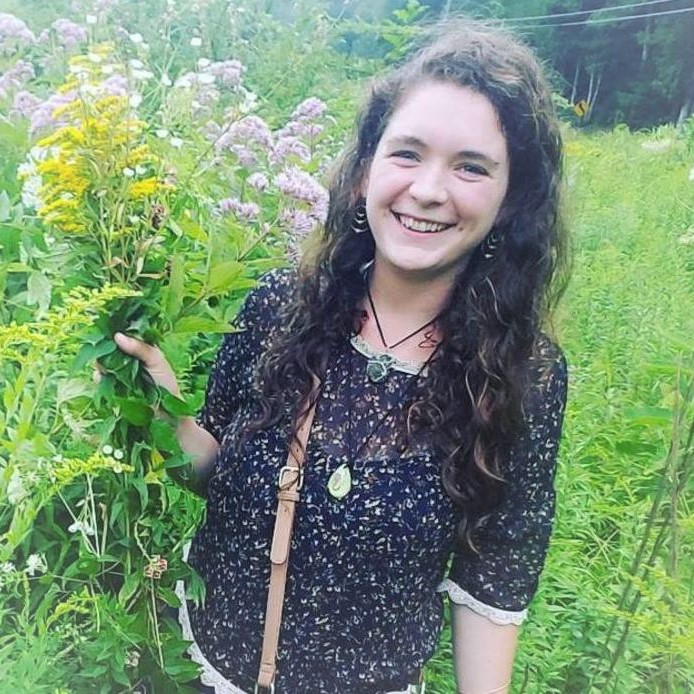
As a Data Visualization Artist, Jane collaborates with fellow team members at the Vermont Complex Systems Center to make the complex comprehensible through engaging interactive graphics. As a Master of Fine Arts (MFA) in Emergent Media student at Champlain College, her graduate thesis work celebrates universalities of scientific and artistic inquiry through trans-disciplinary illustration, multimedia sculpture, and participatory installation.
jane@universalities.com
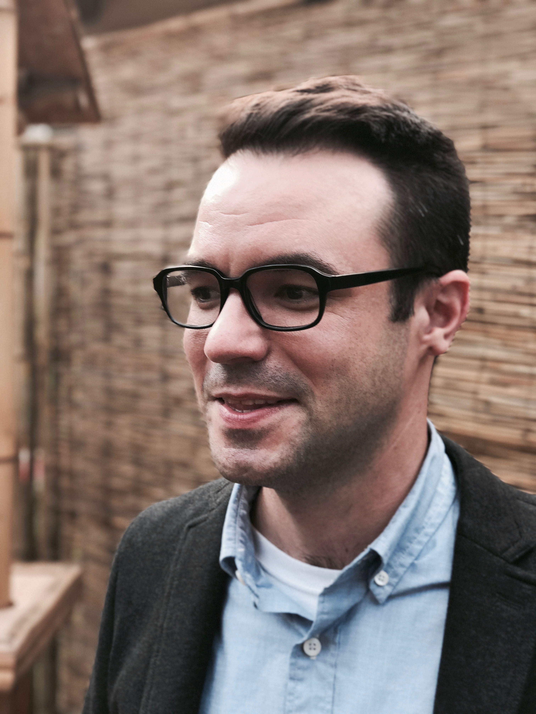
John E. Adams AICP is the Director of the State of Vermont’s Center for Geographic Information (VCGI) and leads all areas of the organization with a focus on empowering the public and private sector with access to geospatial data and technologies. He is a professionally certified planner who previously served as Planning and Policy Manager at the Agency of Commerce and Community Development and worked in the field of land use planning for a decade in Vermont and abroad. John is the primary author of Vermont’s Planning Manual and has taught Land Use Policy and Economics at University of Vermont. He holds a Masters of Urban and Regional Planning from Queen’s University and a BA in Environment and Development from McGill University and currently lives in Montpelier.
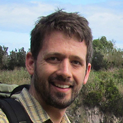
Dan Baston is a Scientific Software Engineer at ISciences in Burlington, where he works with a team of scientists and statisticians to tackle problems in the fields of water, climate, and sustainability. He discovered the world of open-source GIS in 2012 after arriving at his desk one morning to find that ArcGIS had still not finished his "clip" operation. Now an active member of the open-source GIS community, he is a core contributor to the PostGIS spatial database and GEOS geometry library, and occasional contributor to several other projects. He has lead and developed diverse projects, from buzzwordy stuff like a React-based distributed editing system using microservices, to low-level algorithms to generate polygon datasets from non-spatial source materials. Before focusing on software development, he worked in the field of environmental site remediation.
Jenny Bower is a GIS professional with the Vermont Center for Geographic Information and performs locally as an organist and harpsichordist. Her most recent work has focused on the potential of data science and GIS to foster interdisciplinary bridges between science and art, a passion she has explored through residencies with the SciArt Center in NYC and Generator Makerspace in Burlington. As a keyboardist, she has competed internationally and was named 2017 Vermont Artist of the Year by the Vermont chapter of the American Guild of Organists. In the fall, she will begin a PhD in soil science at the University of Vermont while serving as adjunct GIS instructor at St. Michael’s College.

David Breeding enjoys leading clients to engaging, informative and valuable spatial solutions. As Director of Analytics at AppGeo, it is now his full-time pursuit to uncover, define, and identify solutions that answer customer questions. David's spatial skills and thinking were forged in the crucible of the Esri environment and currently, he is enjoying the exploration of an ever-growing ecosystem of spatially capable resources.
dbreeding@appgeo.com
Ivan is the GIS Database Administrator at VCGI (Vermont Center for Geographic Information). He has been in the GIS field since 1998. His experience includes work in many functions, including data collection, quality control, spatial analysis, application development, project management, database administration, and TC (technical communication).
After college, Ivan researched various career paths that might be taken. He discovered GIS. Given that he had always liked maps and knew that GIS was increasingly used to serve business needs, he took the GIS Road into the workforce.
Katie Budreski is a Senior GIS Specialist and leader of the Geospatial and Data Solutions team at Stone Environmental. Over the past ten years, she has lead and conducted advanced geospatial analyses across a variety of disciplines including water resources, forestry, renewable energy, and agriculture. She has overseen large and small projects related to database development, database management, spatial analysis, web application development, and tool development.
Hugo Martinez Cazon is an environmental engineer. His work combines his technical skills with his love for industrial history.Growing up his prized possession was a historical atlas his father gave him, and the love for making a historic map to illustrate facts was born. His mom's passion for cross polinating knowledge and art encouraged a lifetime of curiosity.
The industrial history of hazardous waste sites allows the researcher an understanding of the types of chemicals that will result, and most likely impact the environment. Hugo has been developing that type of knowledge since the mid 1980s. Although not trained in GIS, he has been active in the use of mapping efforts to better understand environmental releases.
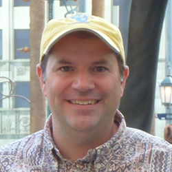
Johnathan Croft has been working in the field of GIS since 1989, after receiving a degree in geography from the University of Vermont. He has been overseeing the Mapping Section at the Agency of Transportation since 1998.
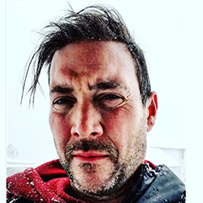
Matthew likes connecting ideas and people through maps. Using modern technology to improve cooperation and solve real world problems is a worthy task and as an account manage on the State team at Esri it is one of his goals to improve and refine processes. He has been in the geospatial field starting with environmental focused areas of forestry and agriculture and then to imagery and finally business focused geoanalytics.
Marguerite Dibble is the CEO of GameTheory and a consultant on game design, computer science education, and strategic development. She studied game development at Champlain College and founded her company before graduating in 2012. She was appointed to the Board of Trustees at Champlain College and currently serves on the Board of Directors for Vermont Public Television. She has been a keynote speaker at many events, including a TEDX talk, discussing the ways in which we can use game design for good, and promote diversity in technology spaces.
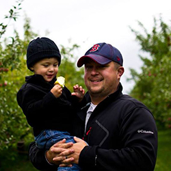
Erik is a self-proclaimed wanderer. From aimlessly playing in streams and farm fields during his childhood in Williston to 3 undecided years at the University of Vermont. He may not have found his way if it weren’t for GIS. As a Geography/Geology Major Erik took many special projects and internships leading him to the Agency of Natural Resources. Erik has been managing geospatial data, engineering solutions, and building applications that overlay the public and the environment. Erik has helped drive GIS in state government for over 15 years. It’s safe to say, that he has found his place and has set his waypoint.
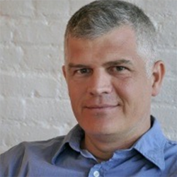
Greg Fanslow is a data scientist with decades of experience developing statistical algorithms and computational workflows to leverage “big data” and address real world challenges. He produces data driven insights to catalyze interdisciplinary teams and help decision makers better understand opportunities and rigorously predict future outcomes. Greg has worked for many years for utilities and on many large scale environmental analysis projects.
Greg Fanslow is an independent consultant who enjoys working with clients who are passionate about using data driven insights to increase the impacts of their organizations. He works with clients ranging from non-profits and small companies to large utilities and a Fortune 500 corporation on projects as diverse as text mining, air quality monitoring, industrial protein synthesis, energy efficiency, retail forecasting and national sports ranking systems. The only type of project that he tries to avoid is talking about himself in the third person.
Design, data and problem-solving has always been something that has interested me. Located in Burlington, Vermont, for the last 8 years I have worked in software in a variety of industries. Currently I am the first Data Innovation Fellow for the Vermont Center of Geographic Information and the organizer of this joint geospatial and data science conference, GeoDatSci. Each of these experiences taught me the importance of data-driven decision making and creating compelling stories.
Self-taught in R and Python for data science, machine learning and visualization, I have published articles in Medium and led local Data Scientist Meetups to help others. For me the merging of my fine art and design skills into data analysis is a natural progression and reflects the field’s direction in general.
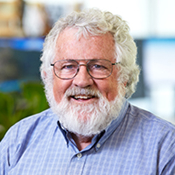
David Healy has been a GIS innovator in solving complex analytical and technical problems for over 25 years at the local, regional, national and international level. He has led numerous GIS solution strategies, including project design, programming, modeling, layout and production for diverse projects; he has overseen large data compilation and extraction projects; and has led the development a wide variety of innovative projects solving complex problems. He believes that interweaving web maps creates compelling stories and supports deeper understanding.
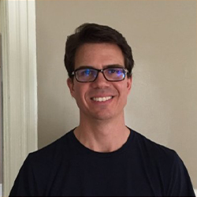
Tim has 20 years experience building software. These days, he is focussing on applying data analysis and machine learning techniques to solve real world problems. Tim is looking forward to joining the Data Analytics team at Vermont Energy Investment Corporation this spring. He is also collaborating with friends at Code for BTV to build a service that identifies and tracks algae blooms. When not building software, Tim can be found spending time by the lake or restoring the old barn in his backyard.
Dan Martin works for the National Geodetic Survey and has been the Northeast Regional Geodetic Advisor since May of 2015. As the Regional Advisor, he instructs local surveyors, state and municipal agencies, and the geospatial community at large, on how to use and preserve the National Spatial Reference System, and provides liaison between the National Geodetic Survey and the States of ME, NH, VT, MA, CT, RI, NY, and NJ, as well as other federal agencies. He worked in the Route Survey and Geodetic Survey sections of the Vermont Agency of Transportation from 1988 through 2003, and held the position of Geodetic Program Supervisor for the Agency from 1999 through 2003. In 2003 Dan began his career with the National Geodetic Survey as the Vermont State Geodetic Advisor. Dan is a Past President and Fellow Member of the American Association for Geodetic Surveying (AAGS), he is also a member of the Vermont Society of Land Surveyors and the New Hampshire Land Surveyors Association.
Bill Morris is a recovering cartographer, now senior analyst and data plumber at Faraday Inc. in Burlington.
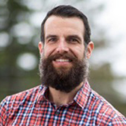
Jarlath O’Neil-Dunne is the Director of the University of Vermont Spatial Analysis Laboratory. He dabbles in drones, satellite imagery, LiDAR, and various types of GIS-based analyses. He has been forcing people to listen to topics he finds interesting at Vermont geospatial gatherings since 2001.
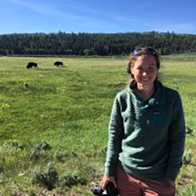
Megan Petroski moved to Vermont directly after finishing her Bachelor’s in International Relations and Master’s in GIS at Kent State University in Ohio. She started working for Maponics(now Pitney Bowes) in 2012 as a Production Cartographer/Spatial Data Analyst, moved to Quality Assurance in 2016, and then jumped into the latest adventure as a Data Processing Engineer for the Location Intelligence arm of the business in late 2017. Now she is responsible for co-maintaining production system code and database structure for all the Vermont office data products. She’s passionate about clean data and along with co-worker Betsy Thompson, has developed an automated quality metric tools using SQL, Python, Git, and Jenkins to monitor change in products on a daily and quarterly basis. Outside of work, you can find Meg outside biking, skiing, climbing, running, and generally adventuring with her knitting bag close to her side.
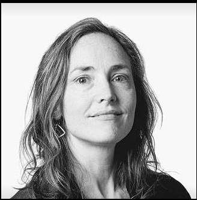
Courtney is an artist and jewelry designer with a decade of experience. She has a background in Environmental Science from Brown University and also attended Rhode Island School of Design. Her jewelry has grown out of her love for the outdoors and her passion for exploring new technology and ancient processes. Her work uses data from the USGS to create accurate elevation maps. Each is designed with aesthetics in mind, whether it is a bird’s eye view or a silhouette view. She works to capture the essence of the place, so the wearer can bring their memories of that place with them. Courtney's background in science and love of maps has fueled her inquiry into creating this data driven design process.
Roger Branon Rodriguez is a multi-disciplinary design and creative practitioner with over seventeen years of experience. He has worked across a wealth of industry sectors, interpreting business communications, defining visions and creating impactful experiences for consumers. Roger’s past work has focused on design strategy, user research, information architecture, user interface design, usability testing and front-end development. At Stone Environmental, Roger leads clients and project teams with design strategies that combine user, business and development goals. He likes to keep things simple, usable and enjoyable.
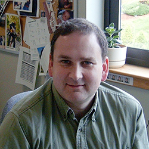
Tom Schwartzman is a solution engineer in Esri’s Boston office and has been with Esri for more than 20 years. He has worked with all flavors of Esri software and all flavors of customers and is passionate about helping them get the most out of Esri software.
Since 2006, Tim Sinnott has been a senior cartographer and interaction designer for GreenInfo Network, a nonprofit mapping organization based in Oakland California. GreenInfo's mission is to "create, analyze, visualize and communicate information in the public interest."
Stephen is a GIS Manager by day and a Cartographer by night. At his day job he helps manage highway asset datasets that drive decision making at the Vermont Agency of Transportation. In his spare time, he geeks out about beautiful maps on Twitter and tries to find a moment or two to mess with the latest spatial tech. He likes open data, open APIs, open source software, open door policies, and people who are open books.
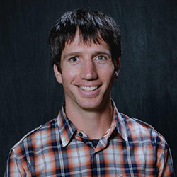
John Stanton-Geddes is a Manager for the Decision Sciences team at Cox Automotive, after starting as a Data Scientist in 2014. Previously, he worked in ecological genomics at the University of Vermont, where satisfied a life-long goal of getting paid to crush ants. He has a PhD in Evolutionary Biology and Ecology with a minor in Statistics from the University of Minnesota, where he contributed to novel techniques for life-history analysis, and a BA from Amherst College. In his work at Cox Automotive and Dealer.com, John has worked on attribution modeling, advertising impression share, fraud detection, AB testing, dealer network analysis and sentiment analysis. He's a co-founder and organizer of the Burlington Data Scientists Meetup group. John also enjoys biking, hiking, and running. He once had spare time, but he now happily spends it chasing his kids around.
Betsy Thompson moved to Vermont from Philadelphia to attend UVM. She studied Geography and Environmental Studies. After graduating she continued to pursue Geography and her passion for maps. Betsy now works as the Production System Coordinator for Pitney Bowes, working on the Quality team in the Location Intelligence side of the business. Her most current project is developing an automated system for the quality processes by using simple SQL queries that run on a nightly basis. Betsy loves the outdoors and exploring the beautiful state of Vermont.
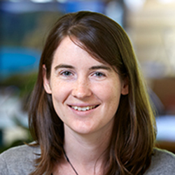
Kelsey is a geologist and spatial data scientist who joined Stone Environmental in May, 2013. She specializes in telling visual stories with data and making complex datasets understandable through maps and 3D visualization. Her work involves GIS mapping, spatial analysis, 3D-modeling, data management, and database design. Before coming to Stone, she completed a Master’s Thesis in Glacial Geomorphology at Idaho State University, and then worked as a quaternary Geologist for the Minnesota Geological Survey.
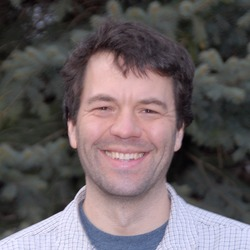
Greg Warrington is Associate Chair of the Department of Mathematics & Statistics at the University of Vermont. He is an experimental mathematician who relies heavily on computer investigations for generating hypotheses he then (tries to) prove. An algebraic combinatorialist, Greg is drawn to accessible problems such as those arising from the mathematics of juggling or from the game of memory. Mathematical problems with a visual component are especially appealing to him.
gswarrin@uvm.edu
@GSWarrington
Any questions? Join us on Slack, send us an email at accd.vcgiinfo@vermont.gov, or connect through one of the avenues below.